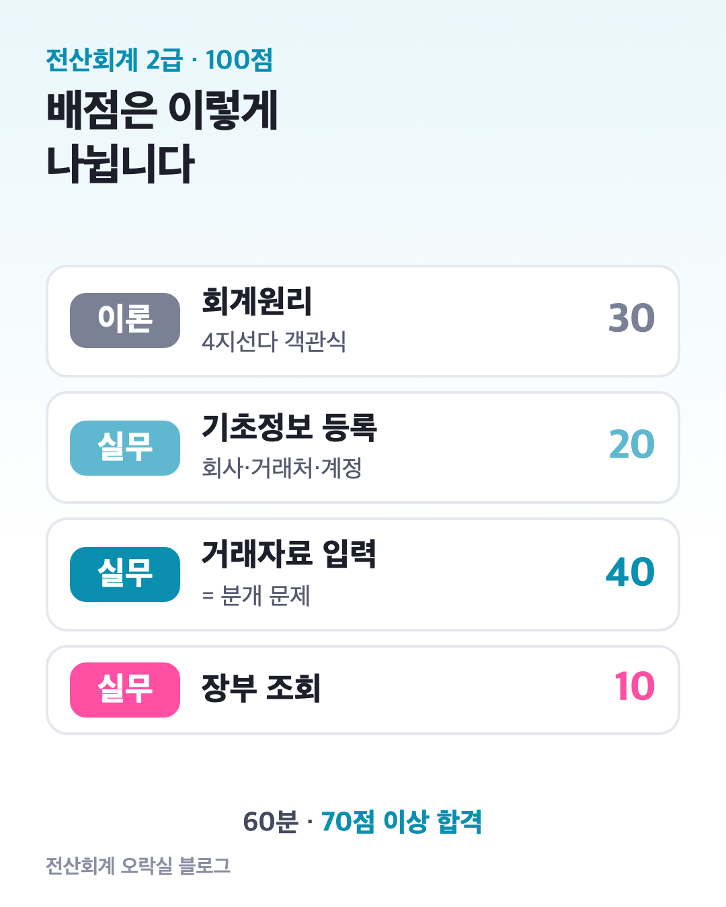
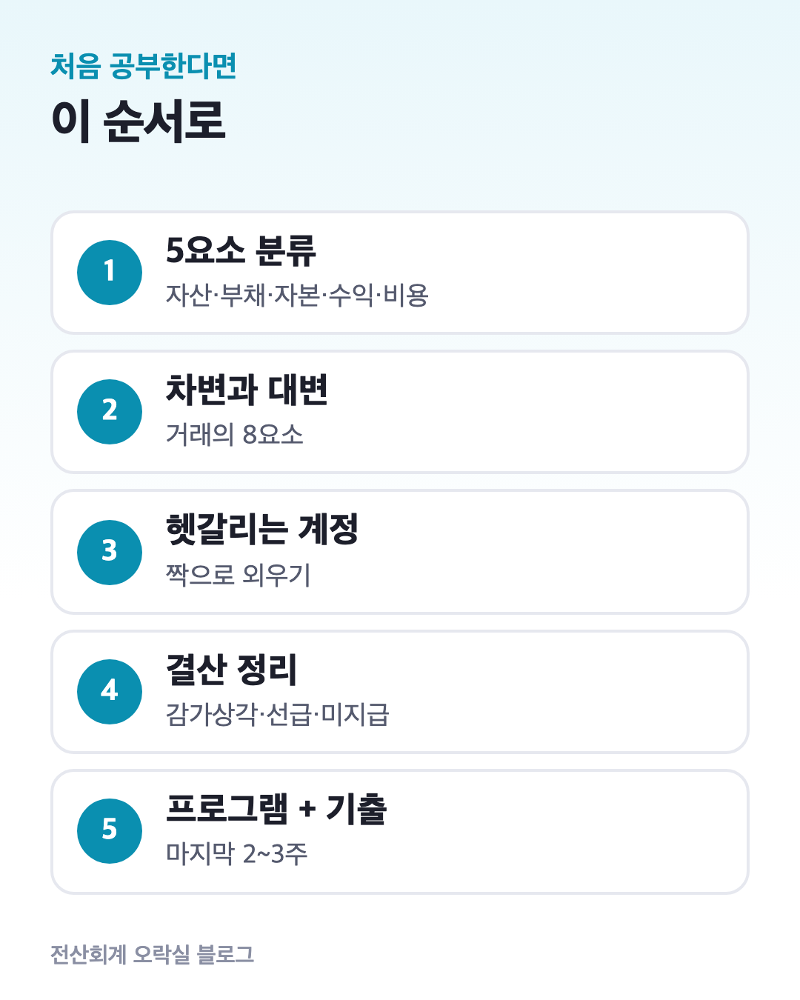
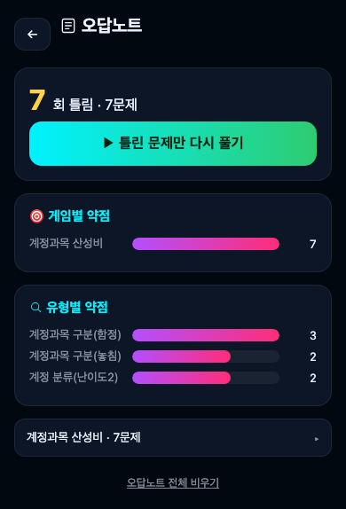

전산회계 2급 시험 구성과 합격선｜이론 30점·실무 70점, 무엇부터 공부할까
전산회계 2급은 60분 동안 이론 30점과 실무 70점을 풀어 70점 이상이면 합격입니다. 실무가 70점이라 “프로그램부터 익혀야 하나?” 싶지만, 실무 문제도 결국 분개를 맞히는 시험이에요.
이 글에서는 ① 한국세무사회 공식 평가범위로 본 배점, ② 129회 일정, ③ 처음 공부할 때의 순서를 정리합니다. (2026년 10월 기준)

1. 시험은 한 번에 60분, 이론과 실무를 같이 풉니다
이론과 실무가 따로 나뉜 시험이 아닙니다. 시험장 PC에서 이론 객관식(4지선다)과 실무 문제를 60분 안에 함께 풉니다.
실무는 케이렙(KcLep)이라는 회계 프로그램에 답을 입력해요.
| 구분 | 내용 |
|---|---|
| 시험 시간 | 60분 (2026년 기준 12:30~13:30) |
| 합격선 | 100점 만점에 70점 이상 |
| 이론 | 회계원리 30% · 4지선다 객관식 |
| 실무 | 70% · KcLep 프로그램으로 입력 |
| 응시 자격 | 제한 없음 |
2. 실무 70점은 어디서 나오나요?
한국세무사회 시험개요의 2급 실무 평가범위는 세 덩어리입니다.
- 기초정보의 등록·수정 (20%) — 회사등록, 거래처 등록, 계정과목 및 적요 등록
- 거래자료의 입력 (40%) — 일반전표 입력, 입력 자료의 수정·삭제, 결산자료 입력(상기업에 한함)
- 입력자료 및 제장부 조회 (10%) — 입력된 자료로 장부를 찾아 답하기
가장 큰 덩어리인 거래자료 입력 40%가 사실상 분개 문제입니다. “상품을 외상으로 팔았다”를 읽고 차변·대변과 계정과목을 정확히 고르면 프로그램에는 옮겨 적기만 하면 돼요.
3. 이론 30점은 회계원리에서만 나옵니다
2급 이론 범위는 회계원리 하나입니다. 공식 범위는 당좌·재고·유형자산, 부채, 자본금, 수익과 비용이에요.
1급에 있는 원가회계와 부가가치세는 2급에 없습니다.
자주 나오는 이론은 대부분 실무 분개와 겹칩니다. 예를 들어 “거래의 8요소”, “재고자산 평가(선입선출법)”, “감가상각비 계산”은 이론 문제로도, 결산 실무로도 나와요.
4. 129회 일정 — 접수는 11월 5일부터
| 일정 | 날짜 (2026년) |
|---|---|
| 원서 접수 | 11월 5일(목) ~ 11월 11일(수) |
| 시험장 공고 | 11월 30일 ~ 12월 5일 |
| 시험일 | 12월 5일(토) |
| 합격 발표 | 12월 24일(목) |
접수는 한국세무사회 자격시험 사이트에서 합니다. 신분증이 없으면 응시할 수 없어요.
접수수수료와 환불 기준은 공식 시험일정 페이지에서 꼭 다시 확인하세요.
5. 처음 공부한다면 이 순서로

- 5요소 분류 — 계정과목을 보고 자산·부채·자본·수익·비용 중 어디인지 바로 말할 수 있게. 5요소 분류 글에서 연습할 수 있어요.
- 차변과 대변 — 거래의 8요소로 “어느 쪽에 적나”를 정하기.
- 헷갈리는 계정과목 — 외상매출금과 미수금, 선급금과 선수금처럼 짝으로 외우기.
- 결산 정리 — 감가상각, 선급비용, 미지급비용처럼 기말에 하는 분개.
- 프로그램 입력 + 기출 — 마지막 2~3주에 KcLep으로 기출을 시간 재고 풀기.
각 단계는 “문제를 보고 3초 안에 답이 나오면” 다음으로 넘어가면 됩니다. 1~3단계가 흔들리면 4~5단계에서 계속 막혀요.
6. 한 장 정리
| 질문 | 답 |
|---|---|
| 합격선 | 70점 (이론+실무 합산) |
| 시간 | 60분, 이론·실무 동시 |
| 가장 큰 배점 | 거래자료 입력 40% = 분개 |
| 이론 범위 | 회계원리만 (원가·부가세 없음) |
| 다음 시험 | 129회 · 접수 11/5~11/11 · 시험 12/5 |
한 줄로 줄이면 “분개를 먼저, 프로그램은 나중에”입니다. 분개가 손에 익으면 실무 70점 중 대부분이 따라와요.
7. 틀린 것만 모아 다시 보기

1~3단계를 게임으로 반복하고 싶다면 전산회계 오락실을 써 보세요. 계정과목 분류, 차변·대변, 결산 정리를 미니게임으로 풀고, 틀린 문제는 오답노트에 게임별·유형별로 모여서 틀린 것만 다시 풀 수 있습니다.
출처: 한국세무사회 시험개요 · 한국세무사회 2026 시험일정
이 블로그는 ‘전산회계 오락실’ 앱 운영자가 씁니다. 공식 자료와 대조해 정리했습니다.